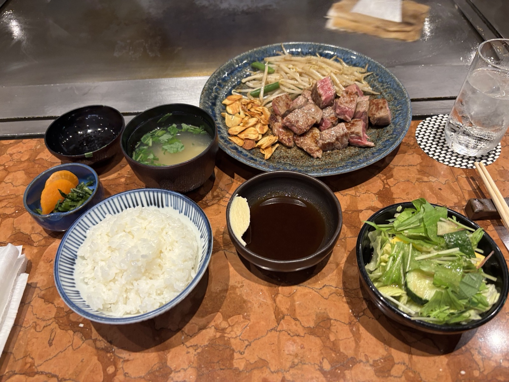
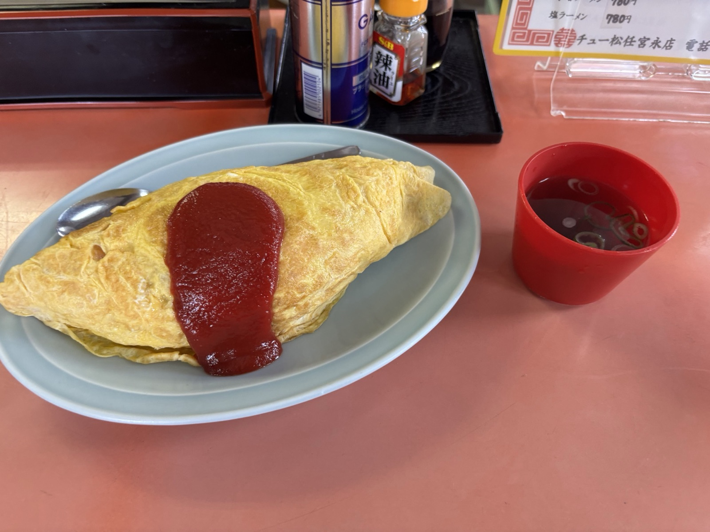
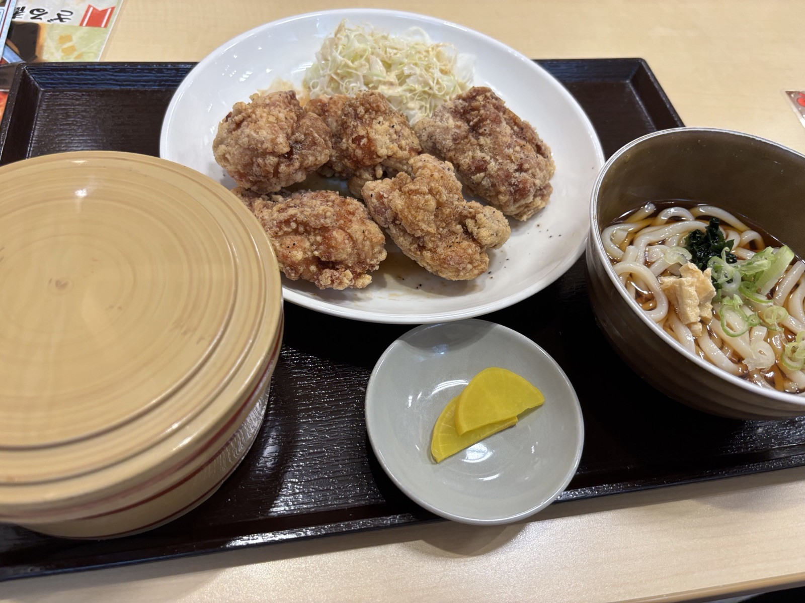
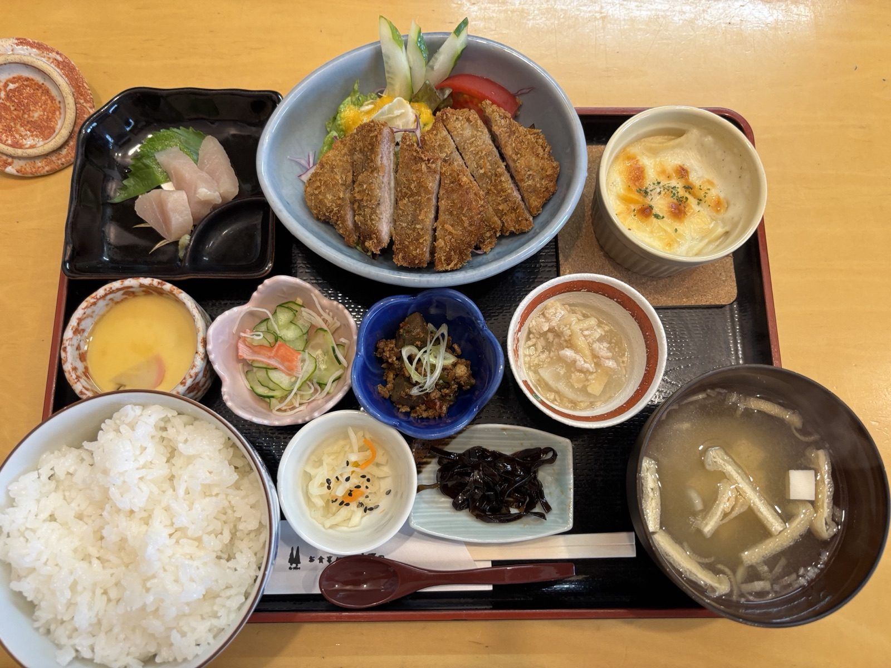
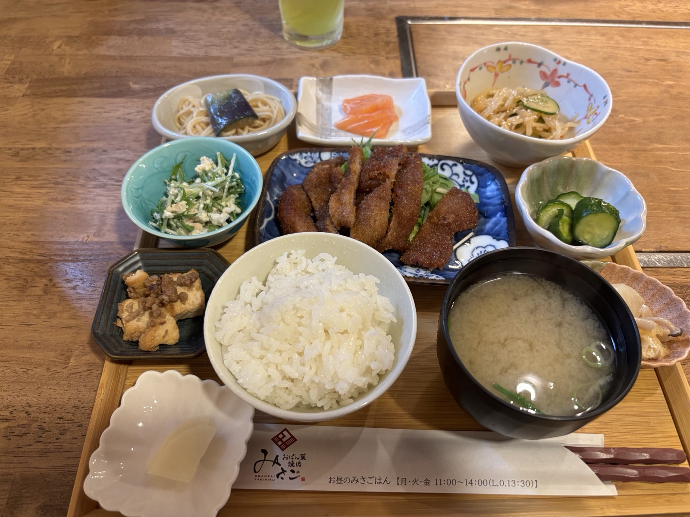
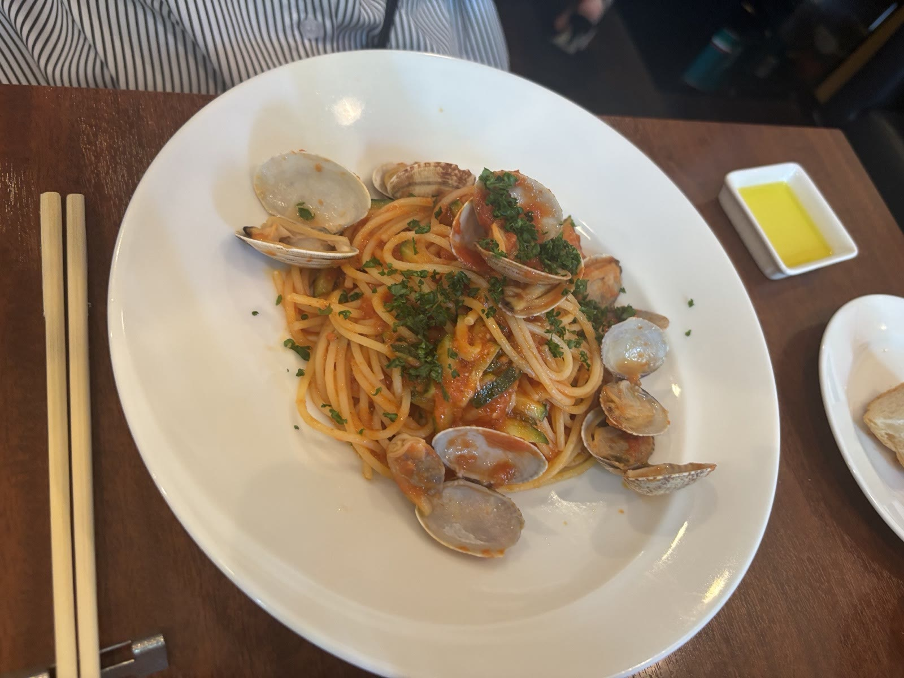

#06ステーキハウス 六角堂
目の前の鉄板で焼き上げるステーキが名物のお店。ランチステーキ定食（輸入牛ロース200g）をいただきました。カリッと香ばしいガーリックチップがお気に入りです。
🍽️ 実際に行ったお店やスポットを、勝手に応援ファンページにして紹介する企画です！

#06目の前の鉄板で焼き上げるステーキが名物のお店。ランチステーキ定食（輸入牛ロース200g）をいただきました。カリッと香ばしいガーリックチップがお気に入りです。

#05
#04
#03
#02
#01